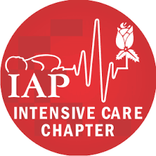

Basics of ventilation
Indications, physiology, modes and the first settings.
Dr Manju KedarnathSenior consultant and clinical lead · Pediatrics, Peds ER and PICUKIMS Hospitals, Electronic City, Bangalore

Four objectives
Learning objectivesIndications for ventilation
Basic anatomy and physiology
Modes of ventilation
Initial ventilator settings
Why we ventilate
Two jobs, one gradient
AlsoCO₂ diffuses about 20 times faster than O₂ — oxygen fails first
Three causes of respiratory failure
IndicationsCardiopulmonary: oxygen cannot cross
CNS or neuromuscular: the drive and pump fail
Metabolic demand outruns capacity: sepsis, shock
Trend and work of breathing beat one number
When breathing fails
Three routesPurpose of ventilation
What you set
& want to happen
Waveforms
Explain why things happen
What is actually happening
The patient


AlsoThree goals for every mode: safety · comfort · liberation
Support, doing the least harm
Physiological goalsBuy time until the disease resolves
Restore oxygenation: ARDS
Restore ventilation: reduced CNS drive
Reduce work of breathing: asthma, CLD
Reduce metabolic demand: shock
Oxygenation and ventilation
Two problems, two knobs
Read every gas this wayAlsoMean airway pressure rises with peak pressure, inspiratory time, rate and PEEP
Oxygenation: MAP and FiO₂
Six causes of hypoxiaPAO₂ drives gas across the membrane
Hb saturated a third of the way along
On the ventilator: mean airway pressure, FiO₂
Hypoventilation · anaemia · cardiac shunt
Airway disease · consolidation · atelectasis: V/Q
Mean airway pressure: the area
MAP = area under the curvePressure control · MAP is the area under this curve
Raise PIP
Raise PEEP
Lengthen Ti · I:E
Raise FiO₂
Minute ventilation
VE = RR × VTAlsoSmaller breaths, bigger dead space share: 30% → 50%
Balloon or basketball?
C = ΔV ÷ ΔPAlsoStatic compliance uses plateau · dynamic uses peak — the gap is resistance
Radius rules
PoiseuilleAlsoSmall tube, secretions, water in the circuit — all add resistance
Time constant

TC = C × R
3 × TC
≈ 95% emptiedTime needed to fill or empty
Time constant by disease
τ = R × C · sets the I:EStiff lung · short τ · empties fast
Normal lung: τ ≈ 0.3–0.5 s
ARDS: low compliance, short τ
Asthma, bronchiolitis: high resistance, long τ
I:E follows τ: ARDS 1:1.5, asthma 1:4
Flow not back to zero: trapping
Peak vs plateau
Inspiratory holdAirway or lung?
Five-second diagnosisDriving pressure
Safe bet ≤ 15 cmH₂OHow a breath is built
Inside the black box
One logic, many brands

01InputGas + power
02ControlValves · processor
03OutputP · V · flow
We control inspiration; expiration is passive
The basic conceptTrigger: when to breathe
Limit: how much
Cycle: when to stop breathing in
Expiration: elastic recoil, not the machine
Feeling the effort
TriggerWhat do you set?
V = P × CAlsoOne variable at a time: control pressure or volume, never both
Time or flow cycled
Cycle
A · Time cycledPC: ends at the set Ti
B · Flow cycledPSV: ends when flow falls to ~25% of peak
PSVAlways patient-triggered
Square or ramp?
Flow shape in volume controlTrade-offSquare: measure Raw, higher PIP · Decelerating: lower PIP, higher mean Paw, more even filling
The modes
Three modes you’ll use
Machine breathChild’s breathAlsoWho drives? AC — the machine · SIMV — the child, until they stop · PS — the child
Who is driving?
Car analogy
ACVentilator drives · you set the rate
PSChild drives · no set rate
SIMVChild drives until they falter · you set the rate
PC-ACSet PIP and RR
The SIMV window
Synchronisation

Four phases of a PS breath
Tobin ch 8 · Brochard1 · EffortChild pulls · auto-PEEP must be overcome first
2 · Trigger delayValve opens · <100 ms on modern machines
3 · PressuriseRise time sets how fast
4 · Cycle offFlow falls to ~25% of peak · varies 5–80% by machine
AlwaysNo mandatory breaths: set apnoea backup · leak stops flow falling: set a max Ti, especially on NIV
CPAP: no machine breaths
Spontaneous modeElevated baseline, child breathes alone
Child sets rate, VT and Ti
PEEP for a spontaneous breath: better oxygenation
Too high: expiratory work rises
PRVC, breath by breath
Volume targeting
The first settings
What the panel asks
Choices on the control panelMode: VC · PC · SIMV · PS · CPAP
Tidal volume and rate
Inspiratory flow or Ti · I:E
FiO₂ and PEEP
Initial settings
Dial these firstFiO₂ 1.0, then titrate below 0.6
VT protective 5–7 mL/kg, not 10
Rate: physiological for age
I:E 1:2 · ARDS 1:1.5 · asthma 1:4
Flow preset, at least 10 L/min
PEEP keeps the door open
VideoVideo · PEEP explained
Holds alveoli open at end-expiration
Raises FRC, recruits
Prevents open–close injury
Improves oxygenation via MAP
PEEP by disease
Start, then titrateAsthma 2–3 · pneumonia 5–6
ARDS 7–9, titrate to 12–15
Raises FRC, recruits alveoli
Protects against VILI
Eases triggering when gas is trapped
Gentle ventilation
Permissive targetsPermissive hypercapnia: limit the pressures
Permissive hypoxaemia: PaO₂ 55–65, SpO₂ 88–92
FiO₂ below 0.6, PEEP in check
Haematocrit above 30 keeps content up
Two safety limits
VT 120 · Pplat 28 · PEEP 8DDisplaced tube
OObstructed tube
PPneumothorax
EEquipment failure
SStacked breaths
In doubt: disconnect and hand-bag. Treat every alarm like a code blue.
The most important piece of equipment
in any ICU is the clinician at the bedside. Thank you.